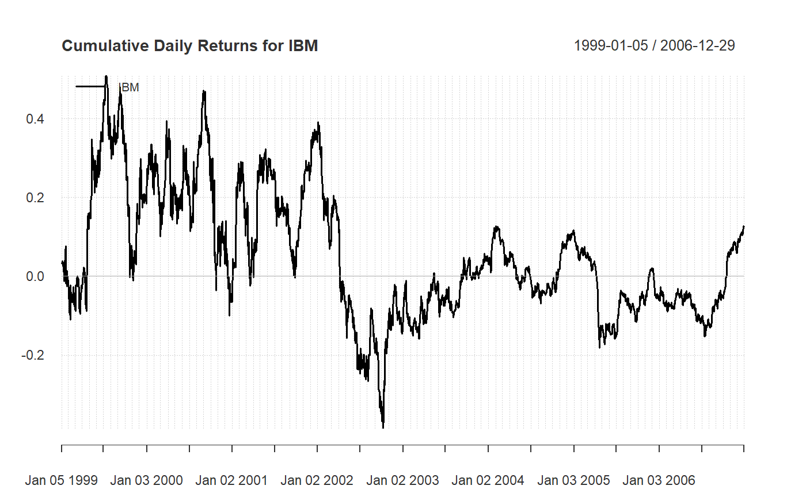

calculate simple or compound returns from prices
Return.calculate(prices, method = c("discrete", "log")) CalculateReturns(prices, method = c("discrete", "log"))
| prices | data object containing ordered price observations |
|---|---|
| method | calculate "discrete" or "log" returns, default discrete(simple) |
Two requirements should be made clear. First, the function
Return.calculate assumes regular price data. In this case, we
downloaded monthly close prices. Prices can be for any time scale, such as
daily, weekly, monthly or annual, as long as the data consists of regular
observations. Irregular observations require time period scaling to be
comparable. Fortunately, to.period in the xts
package, or the aggregate.zoo in the zoo package
supports supports management and conversion of irregular time series.
Second, if corporate actions, dividends, or other adjustments such as time-
or money-weighting are to be taken into account, those calculations must be
made separately. This is a simple function that assumes fully adjusted close
prices as input. For the IBM timeseries in the example below, dividends and
corporate actions are not contained in the "close" price series, so we end
up with "price returns" instead of "total returns". This can lead to
significant underestimation of the return series over longer time periods.
To use adjusted returns, specify quote="AdjClose" in
get.hist.quote, which is found in package
tseries.
We have changes the default arguments and settings for method
from compound and simple to discrete and
log and discrete to avoid confusing between the return type
and the chaining method. In most of the rest of PerformanceAnalytics,
compound and simple are used to refer to the return chaining method used for the returns.
The default for this function is to use discrete returns, because most other package
functions use compound chaining by default.
Bacon, C. Practical Portfolio Performance Measurement and Attribution. Wiley. 2004. Chapter 2
# NOT RUN { require(quantmod) prices = getSymbols("IBM", from = "1999-01-01", to = "2007-01-01") # }R.IBM = Return.calculate(xts(prices), method="discrete") colnames(R.IBM)="IBM" chart.CumReturns(R.IBM,legend.loc="topleft", main="Cumulative Daily Returns for IBM")round(R.IBM,2)#> IBM #> 1999-01-04 NA #> 1999-01-05 0.04 #> 1999-01-06 0.00 #> 1999-01-07 0.01 #> 1999-01-08 -0.01 #> 1999-01-11 0.01 #> 1999-01-12 -0.02 #> 1999-01-13 0.00 #> 1999-01-14 -0.03 #> 1999-01-15 0.02 #> 1999-01-19 0.04 #> 1999-01-20 0.01 #> 1999-01-21 0.01 #> 1999-01-22 -0.09 #> 1999-01-25 0.01 #> 1999-01-26 0.02 #> 1999-01-27 -0.04 #> 1999-01-28 0.00 #> 1999-01-29 0.03 #> 1999-02-01 -0.02 #> 1999-02-02 -0.02 #> 1999-02-03 -0.01 #> 1999-02-04 -0.03 #> 1999-02-05 -0.02 #> 1999-02-08 0.01 #> 1999-02-09 -0.03 #> 1999-02-10 0.04 #> 1999-02-11 0.06 #> 1999-02-12 -0.03 #> 1999-02-16 0.00 #> 1999-02-17 -0.01 #> 1999-02-18 0.02 #> 1999-02-19 -0.02 #> 1999-02-22 0.04 #> 1999-02-23 -0.01 #> 1999-02-24 -0.02 #> 1999-02-25 0.00 #> 1999-02-26 -0.02 #> 1999-03-01 -0.01 #> 1999-03-02 0.00 #> 1999-03-03 -0.01 #> 1999-03-04 0.03 #> 1999-03-05 0.04 #> 1999-03-08 0.00 #> 1999-03-09 0.02 #> 1999-03-10 0.00 #> 1999-03-11 0.01 #> 1999-03-12 -0.03 #> 1999-03-15 0.02 #> 1999-03-16 -0.01 #> 1999-03-17 -0.02 #> 1999-03-18 0.00 #> 1999-03-19 -0.05 #> 1999-03-22 -0.01 #> 1999-03-23 -0.01 #> 1999-03-24 0.02 #> 1999-03-25 0.01 #> 1999-03-26 0.01 #> 1999-03-29 0.03 #> 1999-03-30 0.00 #> 1999-03-31 -0.01 #> 1999-04-01 0.00 #> 1999-04-05 0.04 #> 1999-04-06 -0.01 #> 1999-04-07 0.02 #> 1999-04-08 0.00 #> 1999-04-09 0.00 #> 1999-04-12 -0.02 #> 1999-04-13 -0.02 #> 1999-04-14 0.00 #> 1999-04-15 -0.01 #> 1999-04-16 -0.04 #> 1999-04-19 -0.02 #> 1999-04-20 0.02 #> 1999-04-21 0.01 #> 1999-04-22 0.13 #> 1999-04-23 0.03 #> 1999-04-26 0.05 #> 1999-04-27 0.01 #> 1999-04-28 -0.03 #> 1999-04-29 0.00 #> 1999-04-30 0.02 #> 1999-05-03 0.01 #> 1999-05-04 0.00 #> 1999-05-05 0.00 #> 1999-05-06 -0.01 #> 1999-05-07 0.04 #> 1999-05-10 0.01 #> 1999-05-11 0.01 #> 1999-05-12 0.02 #> 1999-05-13 0.09 #> 1999-05-14 -0.03 #> 1999-05-17 -0.01 #> 1999-05-18 0.00 #> 1999-05-19 -0.01 #> 1999-05-20 -0.01 #> 1999-05-21 -0.01 #> 1999-05-24 -0.03 #> 1999-05-25 -0.01 #> 1999-05-26 0.07 #> 1999-05-27 -0.02 #> 1999-05-28 0.00 #> 1999-06-01 -0.03 #> 1999-06-02 0.02 #> 1999-06-03 -0.01 #> 1999-06-04 0.03 #> 1999-06-07 0.04 #> 1999-06-08 -0.03 #> 1999-06-09 0.00 #> 1999-06-10 -0.01 #> 1999-06-11 -0.01 #> 1999-06-14 0.01 #> 1999-06-15 0.00 #> 1999-06-16 0.04 #> 1999-06-17 0.00 #> 1999-06-18 0.00 #> 1999-06-21 0.03 #> 1999-06-22 -0.01 #> 1999-06-23 0.00 #> 1999-06-24 0.00 #> 1999-06-25 0.00 #> 1999-06-28 0.00 #> 1999-06-29 0.02 #> 1999-06-30 0.04 #> 1999-07-01 0.01 #> 1999-07-02 0.01 #> 1999-07-06 -0.01 #> 1999-07-07 0.01 #> 1999-07-08 0.01 #> 1999-07-09 0.03 #> 1999-07-12 0.00 #> 1999-07-13 0.00 #> 1999-07-14 0.00 #> 1999-07-15 -0.01 #> 1999-07-16 0.00 #> 1999-07-19 -0.01 #> 1999-07-20 -0.05 #> 1999-07-21 0.01 #> 1999-07-22 -0.04 #> 1999-07-23 0.01 #> 1999-07-26 -0.01 #> 1999-07-27 0.03 #> 1999-07-28 0.02 #> 1999-07-29 -0.02 #> 1999-07-30 0.00 #> 1999-08-02 -0.03 #> 1999-08-03 -0.02 #> 1999-08-04 -0.01 #> 1999-08-05 0.04 #> 1999-08-06 0.00 #> 1999-08-09 -0.01 #> 1999-08-10 -0.02 #> 1999-08-11 0.03 #> 1999-08-12 -0.02 #> 1999-08-13 0.02 #> 1999-08-16 0.03 #> 1999-08-17 0.01 #> 1999-08-18 -0.04 #> 1999-08-19 -0.01 #> 1999-08-20 -0.01 #> 1999-08-23 0.02 #> 1999-08-24 -0.02 #> 1999-08-25 0.00 #> 1999-08-26 0.00 #> 1999-08-27 0.01 #> 1999-08-30 -0.01 #> 1999-08-31 0.01 #> 1999-09-01 0.02 #> 1999-09-02 -0.01 #> 1999-09-03 0.02 #> 1999-09-07 0.02 #> 1999-09-08 -0.01 #> 1999-09-09 0.03 #> 1999-09-10 0.00 #> 1999-09-13 -0.02 #> 1999-09-14 0.01 #> 1999-09-15 -0.01 #> 1999-09-16 -0.01 #> 1999-09-17 -0.04 #> 1999-09-20 0.04 #> 1999-09-21 -0.02 #> 1999-09-22 -0.02 #> 1999-09-23 -0.03 #> 1999-09-24 0.02 #> 1999-09-27 -0.02 #> 1999-09-28 0.00 #> 1999-09-29 -0.03 #> 1999-09-30 0.01 #> 1999-10-01 -0.03 #> 1999-10-04 0.02 #> 1999-10-05 0.02 #> 1999-10-06 -0.02 #> 1999-10-07 -0.02 #> 1999-10-08 -0.02 #> 1999-10-11 0.01 #> 1999-10-12 -0.04 #> 1999-10-13 -0.04 #> 1999-10-14 0.02 #> 1999-10-15 0.01 #> 1999-10-18 -0.01 #> 1999-10-19 0.00 #> 1999-10-20 0.00 #> 1999-10-21 -0.15 #> 1999-10-22 0.03 #> 1999-10-25 0.00 #> 1999-10-26 0.02 #> 1999-10-27 -0.03 #> 1999-10-28 0.02 #> 1999-10-29 0.03 #> 1999-11-01 -0.02 #> 1999-11-02 -0.02 #> 1999-11-03 0.00 #> 1999-11-04 -0.03 #> 1999-11-05 -0.01 #> 1999-11-08 0.04 #> 1999-11-09 0.00 #> 1999-11-10 0.04 #> 1999-11-11 -0.02 #> 1999-11-12 0.01 #> 1999-11-15 -0.02 #> 1999-11-16 0.01 #> 1999-11-17 -0.01 #> 1999-11-18 0.05 #> 1999-11-19 0.06 #> 1999-11-22 0.04 #> 1999-11-23 -0.02 #> 1999-11-24 -0.01 #> 1999-11-26 0.00 #> 1999-11-29 -0.01 #> 1999-11-30 -0.01 #> 1999-12-01 0.00 #> 1999-12-02 0.02 #> 1999-12-03 0.06 #> 1999-12-06 0.04 #> 1999-12-07 0.01 #> 1999-12-08 0.01 #> 1999-12-09 -0.04 #> 1999-12-10 -0.04 #> 1999-12-13 0.01 #> 1999-12-14 0.00 #> 1999-12-15 -0.02 #> 1999-12-16 0.02 #> 1999-12-17 0.01 #> 1999-12-20 -0.01 #> 1999-12-21 0.01 #> 1999-12-22 -0.02 #> 1999-12-23 0.01 #> 1999-12-27 0.01 #> 1999-12-28 0.00 #> 1999-12-29 -0.01 #> 1999-12-30 0.00 #> 1999-12-31 -0.01 #> 2000-01-03 0.08 #> 2000-01-04 -0.03 #> 2000-01-05 0.04 #> 2000-01-06 -0.02 #> 2000-01-07 0.00 #> 2000-01-10 0.04 #> 2000-01-11 0.01 #> 2000-01-12 0.00 #> 2000-01-13 -0.01 #> 2000-01-14 0.01 #> 2000-01-18 -0.03 #> 2000-01-19 0.03 #> 2000-01-20 0.00 #> 2000-01-21 0.02 #> 2000-01-24 0.00 #> 2000-01-25 -0.02 #> 2000-01-26 -0.02 #> 2000-01-27 -0.03 #> 2000-01-28 -0.02 #> 2000-01-31 0.01 #> 2000-02-01 -0.02 #> 2000-02-02 0.03 #> 2000-02-03 0.03 #> 2000-02-04 -0.01 #> 2000-02-07 -0.01 #> 2000-02-08 0.04 #> 2000-02-09 -0.01 #> 2000-02-10 0.01 #> 2000-02-11 -0.03 #> 2000-02-14 0.01 #> 2000-02-15 0.01 #> 2000-02-16 -0.01 #> 2000-02-17 0.01 #> 2000-02-18 -0.04 #> 2000-02-22 -0.01 #> 2000-02-23 -0.02 #> 2000-02-24 0.02 #> 2000-02-25 -0.02 #> 2000-02-28 -0.03 #> 2000-02-29 -0.02 #> 2000-03-01 -0.02 #> 2000-03-02 0.03 #> 2000-03-03 0.05 #> 2000-03-06 -0.05 #> 2000-03-07 0.00 #> 2000-03-08 0.03 #> 2000-03-09 0.02 #> 2000-03-10 -0.03 #> 2000-03-13 0.02 #> 2000-03-14 0.01 #> 2000-03-15 -0.01 #> 2000-03-16 0.02 #> 2000-03-17 0.01 #> 2000-03-20 0.03 #> 2000-03-21 0.01 #> 2000-03-22 0.01 #> 2000-03-23 0.01 #> 2000-03-24 0.05 #> 2000-03-27 0.05 #> 2000-03-28 -0.03 #> 2000-03-29 -0.03 #> 2000-03-30 0.03 #> 2000-03-31 -0.04 #> 2000-04-03 0.03 #> 2000-04-04 -0.01 #> 2000-04-05 0.03 #> 2000-04-06 -0.02 #> 2000-04-07 0.00 #> 2000-04-10 -0.01 #> 2000-04-11 -0.02 #> 2000-04-12 -0.05 #> 2000-04-13 -0.03 #> 2000-04-14 -0.05 #> 2000-04-17 0.07 #> 2000-04-18 0.00 #> 2000-04-19 -0.06 #> 2000-04-20 -0.01 #> 2000-04-24 0.02 #> 2000-04-25 0.06 #> 2000-04-26 -0.02 #> 2000-04-27 0.00 #> 2000-04-28 0.01 #> 2000-05-01 0.00 #> 2000-05-02 -0.01 #> 2000-05-03 -0.03 #> 2000-05-04 0.00 #> 2000-05-05 0.00 #> 2000-05-08 0.02 #> 2000-05-09 -0.01 #> 2000-05-10 -0.06 #> 2000-05-11 0.01 #> 2000-05-12 0.00 #> 2000-05-15 0.00 #> 2000-05-16 0.05 #> 2000-05-17 -0.01 #> 2000-05-18 -0.02 #> 2000-05-19 0.00 #> 2000-05-22 0.03 #> 2000-05-23 -0.02 #> 2000-05-24 0.02 #> 2000-05-25 -0.03 #> 2000-05-26 0.00 #> 2000-05-30 0.04 #> 2000-05-31 -0.03 #> 2000-06-01 -0.01 #> 2000-06-02 0.03 #> 2000-06-05 0.04 #> 2000-06-06 0.00 #> 2000-06-07 0.08 #> 2000-06-08 -0.01 #> 2000-06-09 0.00 #> 2000-06-12 -0.01 #> 2000-06-13 0.00 #> 2000-06-14 -0.03 #> 2000-06-15 0.01 #> 2000-06-16 -0.03 #> 2000-06-19 0.06 #> 2000-06-20 -0.03 #> 2000-06-21 -0.02 #> 2000-06-22 -0.02 #> 2000-06-23 0.00 #> 2000-06-26 0.02 #> 2000-06-27 -0.04 #> 2000-06-28 0.04 #> 2000-06-29 0.00 #> 2000-06-30 -0.04 #> 2000-07-03 0.00 #> 2000-07-05 -0.04 #> 2000-07-06 -0.04 #> 2000-07-07 0.04 #> 2000-07-10 -0.02 #> 2000-07-11 -0.01 #> 2000-07-12 0.03 #> 2000-07-13 -0.01 #> 2000-07-14 0.00 #> 2000-07-17 0.02 #> 2000-07-18 -0.02 #> 2000-07-19 0.05 #> 2000-07-20 0.08 #> 2000-07-21 -0.02 #> 2000-07-24 -0.02 #> 2000-07-25 0.00 #> 2000-07-26 -0.02 #> 2000-07-27 0.00 #> 2000-07-28 0.01 #> 2000-07-31 0.00 #> 2000-08-01 -0.02 #> 2000-08-02 0.03 #> 2000-08-03 0.02 #> 2000-08-04 0.00 #> 2000-08-07 0.00 #> 2000-08-08 0.02 #> 2000-08-09 0.00 #> 2000-08-10 0.01 #> 2000-08-11 0.01 #> 2000-08-14 0.02 #> 2000-08-15 -0.01 #> 2000-08-16 0.00 #> 2000-08-17 0.00 #> 2000-08-18 -0.02 #> 2000-08-21 0.01 #> 2000-08-22 0.00 #> 2000-08-23 0.02 #> 2000-08-24 0.01 #> 2000-08-25 0.03 #> 2000-08-28 0.02 #> 2000-08-29 0.01 #> 2000-08-30 -0.02 #> 2000-08-31 0.01 #> 2000-09-01 0.01 #> 2000-09-05 -0.02 #> 2000-09-06 0.00 #> 2000-09-07 0.01 #> 2000-09-08 -0.03 #> 2000-09-11 -0.04 #> 2000-09-12 0.00 #> 2000-09-13 0.02 #> 2000-09-14 -0.01 #> 2000-09-15 -0.01 #> 2000-09-18 -0.01 #> 2000-09-19 0.01 #> 2000-09-20 0.00 #> 2000-09-21 -0.03 #> 2000-09-22 0.02 #> 2000-09-25 -0.01 #> 2000-09-26 -0.03 #> 2000-09-27 -0.01 #> 2000-09-28 -0.02 #> 2000-09-29 -0.02 #> 2000-10-02 0.05 #> 2000-10-03 -0.06 #> 2000-10-04 0.03 #> 2000-10-05 -0.01 #> 2000-10-06 0.02 #> 2000-10-09 0.02 #> 2000-10-10 -0.03 #> 2000-10-11 -0.02 #> 2000-10-12 -0.08 #> 2000-10-13 0.06 #> 2000-10-16 0.02 #> 2000-10-17 0.02 #> 2000-10-18 -0.16 #> 2000-10-19 0.01 #> 2000-10-20 -0.02 #> 2000-10-23 -0.02 #> 2000-10-24 -0.02 #> 2000-10-25 -0.04 #> 2000-10-26 0.06 #> 2000-10-27 0.01 #> 2000-10-30 0.00 #> 2000-10-31 0.06 #> 2000-11-01 0.00 #> 2000-11-02 0.03 #> 2000-11-03 -0.02 #> 2000-11-06 0.00 #> 2000-11-07 0.02 #> 2000-11-08 -0.02 #> 2000-11-09 -0.01 #> 2000-11-10 -0.06 #> 2000-11-13 0.05 #> 2000-11-14 0.02 #> 2000-11-15 0.00 #> 2000-11-16 -0.01 #> 2000-11-17 0.04 #> 2000-11-20 0.01 #> 2000-11-21 -0.05 #> 2000-11-22 0.00 #> 2000-11-24 0.01 #> 2000-11-27 -0.01 #> 2000-11-28 -0.01 #> 2000-11-29 0.02 #> 2000-11-30 -0.06 #> 2000-12-01 0.02 #> 2000-12-04 0.03 #> 2000-12-05 0.05 #> 2000-12-06 -0.06 #> 2000-12-07 -0.04 #> 2000-12-08 0.04 #> 2000-12-11 -0.02 #> 2000-12-12 -0.01 #> 2000-12-13 -0.03 #> 2000-12-14 0.01 #> 2000-12-15 -0.05 #> 2000-12-18 0.03 #> 2000-12-19 0.00 #> 2000-12-20 -0.05 #> 2000-12-21 -0.05 #> 2000-12-22 0.09 #> 2000-12-26 -0.05 #> 2000-12-27 0.00 #> 2000-12-28 0.01 #> 2000-12-29 0.00 #> 2001-01-02 0.00 #> 2001-01-03 0.12 #> 2001-01-04 -0.02 #> 2001-01-05 0.01 #> 2001-01-08 0.00 #> 2001-01-09 -0.01 #> 2001-01-10 0.01 #> 2001-01-11 0.00 #> 2001-01-12 0.00 #> 2001-01-16 -0.01 #> 2001-01-17 0.04 #> 2001-01-18 0.12 #> 2001-01-19 0.03 #> 2001-01-22 -0.02 #> 2001-01-23 0.00 #> 2001-01-24 0.01 #> 2001-01-25 0.00 #> 2001-01-26 0.03 #> 2001-01-29 0.01 #> 2001-01-30 0.01 #> 2001-01-31 -0.04 #> 2001-02-01 0.02 #> 2001-02-02 -0.03 #> 2001-02-05 0.02 #> 2001-02-06 0.02 #> 2001-02-07 0.02 #> 2001-02-08 -0.02 #> 2001-02-09 -0.02 #> 2001-02-12 0.03 #> 2001-02-13 -0.01 #> 2001-02-14 0.01 #> 2001-02-15 0.01 #> 2001-02-16 -0.02 #> 2001-02-20 -0.03 #> 2001-02-21 -0.04 #> 2001-02-22 0.01 #> 2001-02-23 -0.04 #> 2001-02-26 0.01 #> 2001-02-27 -0.03 #> 2001-02-28 -0.03 #> 2001-03-01 0.06 #> 2001-03-02 -0.04 #> 2001-03-05 0.03 #> 2001-03-06 0.01 #> 2001-03-07 0.01 #> 2001-03-08 -0.01 #> 2001-03-09 -0.07 #> 2001-03-12 -0.04 #> 2001-03-13 0.03 #> 2001-03-14 -0.03 #> 2001-03-15 0.01 #> 2001-03-16 -0.06 #> 2001-03-19 0.03 #> 2001-03-20 -0.05 #> 2001-03-21 0.01 #> 2001-03-22 0.00 #> 2001-03-23 0.05 #> 2001-03-26 0.02 #> 2001-03-27 0.04 #> 2001-03-28 -0.05 #> 2001-03-29 0.01 #> 2001-03-30 0.01 #> 2001-04-02 -0.02 #> 2001-04-03 -0.05 #> 2001-04-04 0.02 #> 2001-04-05 0.07 #> 2001-04-06 0.00 #> 2001-04-09 -0.02 #> 2001-04-10 0.03 #> 2001-04-11 -0.02 #> 2001-04-12 -0.01 #> 2001-04-16 0.01 #> 2001-04-17 0.03 #> 2001-04-18 0.07 #> 2001-04-19 0.07 #> 2001-04-20 0.00 #> 2001-04-23 -0.02 #> 2001-04-24 0.01 #> 2001-04-25 0.02 #> 2001-04-26 -0.01 #> 2001-04-27 0.02 #> 2001-04-30 -0.01 #> 2001-05-01 0.03 #> 2001-05-02 -0.03 #> 2001-05-03 -0.01 #> 2001-05-04 0.02 #> 2001-05-07 0.00 #> 2001-05-08 0.02 #> 2001-05-09 -0.01 #> 2001-05-10 -0.02 #> 2001-05-11 -0.03 #> 2001-05-14 0.01 #> 2001-05-15 0.01 #> 2001-05-16 0.02 #> 2001-05-17 -0.01 #> 2001-05-18 0.02 #> 2001-05-21 0.01 #> 2001-05-22 -0.01 #> 2001-05-23 -0.01 #> 2001-05-24 0.02 #> 2001-05-25 -0.02 #> 2001-05-29 -0.02 #> 2001-05-30 -0.02 #> 2001-05-31 -0.01 #> 2001-06-01 0.01 #> 2001-06-04 0.01 #> 2001-06-05 0.03 #> 2001-06-06 0.00 #> 2001-06-07 0.00 #> 2001-06-08 -0.01 #> 2001-06-11 0.01 #> 2001-06-12 0.00 #> 2001-06-13 -0.01 #> 2001-06-14 -0.01 #> 2001-06-15 -0.02 #> 2001-06-18 0.01 #> 2001-06-19 0.01 #> 2001-06-20 -0.02 #> 2001-06-21 0.00 #> 2001-06-22 0.00 #> 2001-06-25 0.00 #> 2001-06-26 0.00 #> 2001-06-27 0.00 #> 2001-06-28 0.01 #> 2001-06-29 -0.01 #> 2001-07-02 0.01 #> 2001-07-03 -0.01 #> 2001-07-05 -0.01 #> 2001-07-06 -0.05 #> 2001-07-09 -0.02 #> 2001-07-10 -0.03 #> 2001-07-11 0.02 #> 2001-07-12 0.03 #> 2001-07-13 0.01 #> 2001-07-16 -0.01 #> 2001-07-17 0.01 #> 2001-07-18 -0.04 #> 2001-07-19 0.00 #> 2001-07-20 0.02 #> 2001-07-23 0.00 #> 2001-07-24 -0.01 #> 2001-07-25 0.00 #> 2001-07-26 0.01 #> 2001-07-27 -0.01 #> 2001-07-30 0.01 #> 2001-07-31 -0.01 #> 2001-08-01 0.02 #> 2001-08-02 0.02 #> 2001-08-03 -0.01 #> 2001-08-06 -0.02 #> 2001-08-07 0.00 #> 2001-08-08 -0.02 #> 2001-08-09 0.00 #> 2001-08-10 0.01 #> 2001-08-13 0.01 #> 2001-08-14 0.00 #> 2001-08-15 -0.01 #> 2001-08-16 0.01 #> 2001-08-17 -0.01 #> 2001-08-20 0.00 #> 2001-08-21 -0.02 #> 2001-08-22 0.02 #> 2001-08-23 -0.01 #> 2001-08-24 0.04 #> 2001-08-27 0.00 #> 2001-08-28 -0.02 #> 2001-08-29 -0.01 #> 2001-08-30 -0.04 #> 2001-08-31 0.00 #> 2001-09-04 0.02 #> 2001-09-05 -0.01 #> 2001-09-06 -0.02 #> 2001-09-07 -0.01 #> 2001-09-10 0.00 #> 2001-09-17 -0.03 #> 2001-09-18 0.03 #> 2001-09-19 0.00 #> 2001-09-20 -0.03 #> 2001-09-21 -0.03 #> 2001-09-24 0.05 #> 2001-09-25 0.00 #> 2001-09-26 -0.03 #> 2001-09-27 -0.01 #> 2001-09-28 0.02 #> 2001-10-01 0.01 #> 2001-10-02 0.01 #> 2001-10-03 0.03 #> 2001-10-04 0.00 #> 2001-10-05 0.01 #> 2001-10-08 0.00 #> 2001-10-09 -0.01 #> 2001-10-10 0.00 #> 2001-10-11 0.02 #> 2001-10-12 0.01 #> 2001-10-15 0.01 #> 2001-10-16 0.00 #> 2001-10-17 0.01 #> 2001-10-18 -0.02 #> 2001-10-19 0.01 #> 2001-10-22 0.03 #> 2001-10-23 0.01 #> 2001-10-24 0.03 #> 2001-10-25 0.02 #> 2001-10-26 0.00 #> 2001-10-29 -0.02 #> 2001-10-30 0.00 #> 2001-10-31 -0.01 #> 2001-11-01 0.02 #> 2001-11-02 0.00 #> 2001-11-05 0.00 #> 2001-11-06 0.03 #> 2001-11-07 0.00 #> 2001-11-08 0.00 #> 2001-11-09 0.00 #> 2001-11-12 0.01 #> 2001-11-13 0.02 #> 2001-11-14 -0.02 #> 2001-11-15 0.00 #> 2001-11-16 0.00 #> 2001-11-19 0.00 #> 2001-11-20 0.00 #> 2001-11-21 -0.01 #> 2001-11-23 0.01 #> 2001-11-26 0.01 #> 2001-11-27 -0.02 #> 2001-11-28 -0.02 #> 2001-11-29 0.02 #> 2001-11-30 0.01 #> 2001-12-03 -0.01 #> 2001-12-04 0.02 #> 2001-12-05 0.04 #> 2001-12-06 -0.01 #> 2001-12-07 0.00 #> 2001-12-10 -0.01 #> 2001-12-11 0.02 #> 2001-12-12 0.01 #> 2001-12-13 -0.02 #> 2001-12-14 0.01 #> 2001-12-17 0.00 #> 2001-12-18 0.01 #> 2001-12-19 0.01 #> 2001-12-20 -0.01 #> 2001-12-21 -0.01 #> 2001-12-24 0.00 #> 2001-12-26 0.01 #> 2001-12-27 0.01 #> 2001-12-28 0.00 #> 2001-12-31 -0.02 #> 2002-01-02 0.00 #> 2002-01-03 0.02 #> 2002-01-04 0.02 #> 2002-01-07 -0.01 #> 2002-01-08 0.01 #> 2002-01-09 0.00 #> 2002-01-10 -0.02 #> 2002-01-11 -0.01 #> 2002-01-14 -0.02 #> 2002-01-15 0.01 #> 2002-01-16 -0.01 #> 2002-01-17 0.02 #> 2002-01-18 -0.05 #> 2002-01-22 -0.03 #> 2002-01-23 -0.02 #> 2002-01-24 0.01 #> 2002-01-25 0.01 #> 2002-01-28 -0.01 #> 2002-01-29 -0.05 #> 2002-01-30 0.02 #> 2002-01-31 0.02 #> 2002-02-01 0.00 #> 2002-02-04 -0.01 #> 2002-02-05 0.00 #> 2002-02-06 0.00 #> 2002-02-07 -0.03 #> 2002-02-08 0.01 #> 2002-02-11 0.02 #> 2002-02-12 -0.01 #> 2002-02-13 0.01 #> 2002-02-14 0.00 #> 2002-02-15 -0.05 #> 2002-02-19 -0.02 #> 2002-02-20 -0.02 #> 2002-02-21 -0.03 #> 2002-02-22 0.02 #> 2002-02-25 0.00 #> 2002-02-26 -0.01 #> 2002-02-27 0.01 #> 2002-02-28 0.00 #> 2002-03-01 0.05 #> 2002-03-04 0.03 #> 2002-03-05 0.00 #> 2002-03-06 0.01 #> 2002-03-07 -0.02 #> 2002-03-08 0.01 #> 2002-03-11 0.00 #> 2002-03-12 0.03 #> 2002-03-13 -0.01 #> 2002-03-14 -0.01 #> 2002-03-15 0.00 #> 2002-03-18 0.00 #> 2002-03-19 0.01 #> 2002-03-20 -0.02 #> 2002-03-21 0.01 #> 2002-03-22 -0.01 #> 2002-03-25 -0.02 #> 2002-03-26 -0.01 #> 2002-03-27 0.00 #> 2002-03-28 0.01 #> 2002-04-01 -0.01 #> 2002-04-02 -0.02 #> 2002-04-03 -0.01 #> 2002-04-04 0.01 #> 2002-04-05 -0.04 #> 2002-04-08 -0.10 #> 2002-04-09 0.00 #> 2002-04-10 0.01 #> 2002-04-11 -0.05 #> 2002-04-12 0.02 #> 2002-04-15 0.00 #> 2002-04-16 0.01 #> 2002-04-17 -0.02 #> 2002-04-18 0.05 #> 2002-04-19 0.00 #> 2002-04-22 -0.01 #> 2002-04-23 -0.01 #> 2002-04-24 -0.01 #> 2002-04-25 0.00 #> 2002-04-26 -0.02 #> 2002-04-29 -0.01 #> 2002-04-30 0.00 #> 2002-05-01 0.01 #> 2002-05-02 -0.01 #> 2002-05-03 -0.02 #> 2002-05-06 -0.07 #> 2002-05-07 0.01 #> 2002-05-08 0.08 #> 2002-05-09 -0.03 #> 2002-05-10 0.00 #> 2002-05-13 0.03 #> 2002-05-14 0.04 #> 2002-05-15 -0.01 #> 2002-05-16 0.01 #> 2002-05-17 0.00 #> 2002-05-20 -0.01 #> 2002-05-21 -0.01 #> 2002-05-22 0.01 #> 2002-05-23 0.00 #> 2002-05-24 -0.01 #> 2002-05-28 -0.01 #> 2002-05-29 -0.01 #> 2002-05-30 0.01 #> 2002-05-31 -0.02 #> 2002-06-03 -0.03 #> 2002-06-04 0.02 #> 2002-06-05 0.02 #> 2002-06-06 -0.01 #> 2002-06-07 -0.02 #> 2002-06-10 -0.02 #> 2002-06-11 -0.02 #> 2002-06-12 -0.01 #> 2002-06-13 0.01 #> 2002-06-14 0.01 #> 2002-06-17 0.01 #> 2002-06-18 -0.02 #> 2002-06-19 -0.03 #> 2002-06-20 -0.02 #> 2002-06-21 -0.04 #> 2002-06-24 0.01 #> 2002-06-25 -0.02 #> 2002-06-26 0.02 #> 2002-06-27 0.03 #> 2002-06-28 0.00 #> 2002-07-01 -0.06 #> 2002-07-02 0.01 #> 2002-07-03 0.03 #> 2002-07-05 0.04 #> 2002-07-08 -0.03 #> 2002-07-09 -0.02 #> 2002-07-10 -0.01 #> 2002-07-11 0.01 #> 2002-07-12 0.00 #> 2002-07-15 0.03 #> 2002-07-16 -0.03 #> 2002-07-17 0.02 #> 2002-07-18 0.02 #> 2002-07-19 0.00 #> 2002-07-22 -0.05 #> 2002-07-23 -0.02 #> 2002-07-24 0.04 #> 2002-07-25 0.00 #> 2002-07-26 -0.04 #> 2002-07-29 0.07 #> 2002-07-30 0.01 #> 2002-07-31 -0.02 #> 2002-08-01 -0.03 #> 2002-08-02 -0.01 #> 2002-08-05 -0.03 #> 2002-08-06 0.03 #> 2002-08-07 0.02 #> 2002-08-08 0.04 #> 2002-08-09 0.00 #> 2002-08-12 0.00 #> 2002-08-13 0.00 #> 2002-08-14 0.04 #> 2002-08-15 0.02 #> 2002-08-16 0.04 #> 2002-08-19 0.04 #> 2002-08-20 -0.01 #> 2002-08-21 0.00 #> 2002-08-22 0.01 #> 2002-08-23 -0.02 #> 2002-08-26 -0.01 #> 2002-08-27 -0.02 #> 2002-08-28 -0.02 #> 2002-08-29 0.01 #> 2002-08-30 -0.02 #> 2002-09-03 -0.04 #> 2002-09-04 0.02 #> 2002-09-05 -0.02 #> 2002-09-06 0.01 #> 2002-09-09 0.02 #> 2002-09-10 0.01 #> 2002-09-11 -0.02 #> 2002-09-12 -0.03 #> 2002-09-13 0.01 #> 2002-09-16 0.00 #> 2002-09-17 -0.01 #> 2002-09-18 -0.03 #> 2002-09-19 -0.07 #> 2002-09-20 -0.01 #> 2002-09-23 -0.01 #> 2002-09-24 -0.06 #> 2002-09-25 0.05 #> 2002-09-26 -0.02 #> 2002-09-27 -0.03 #> 2002-09-30 -0.03 #> 2002-10-01 0.05 #> 2002-10-02 -0.03 #> 2002-10-03 0.01 #> 2002-10-04 -0.06 #> 2002-10-07 0.00 #> 2002-10-08 0.00 #> 2002-10-09 -0.03 #> 2002-10-10 0.05 #> 2002-10-11 0.11 #> 2002-10-14 -0.01 #> 2002-10-15 0.08 #> 2002-10-16 -0.05 #> 2002-10-17 0.11 #> 2002-10-18 0.03 #> 2002-10-21 0.02 #> 2002-10-22 -0.01 #> 2002-10-23 0.00 #> 2002-10-24 -0.03 #> 2002-10-25 0.03 #> 2002-10-28 0.03 #> 2002-10-29 0.00 #> 2002-10-30 0.03 #> 2002-10-31 0.00 #> 2002-11-01 0.02 #> 2002-11-04 0.03 #> 2002-11-05 -0.01 #> 2002-11-06 0.00 #> 2002-11-07 -0.03 #> 2002-11-08 -0.02 #> 2002-11-11 0.00 #> 2002-11-12 0.02 #> 2002-11-13 0.00 #> 2002-11-14 0.02 #> 2002-11-15 -0.01 #> 2002-11-18 -0.01 #> 2002-11-19 -0.01 #> 2002-11-20 0.04 #> 2002-11-21 0.04 #> 2002-11-22 -0.01 #> 2002-11-25 0.02 #> 2002-11-26 -0.01 #> 2002-11-27 0.03 #> 2002-11-29 -0.01 #> 2002-12-02 0.00 #> 2002-12-03 -0.02 #> 2002-12-04 -0.02 #> 2002-12-05 -0.01 #> 2002-12-06 -0.01 #> 2002-12-09 -0.03 #> 2002-12-10 0.02 #> 2002-12-11 0.01 #> 2002-12-12 -0.02 #> 2002-12-13 0.00 #> 2002-12-16 0.02 #> 2002-12-17 -0.02 #> 2002-12-18 -0.01 #> 2002-12-19 -0.01 #> 2002-12-20 0.01 #> 2002-12-23 0.01 #> 2002-12-24 -0.01 #> [ reached getOption("max.print") -- omitted 1011 rows ]